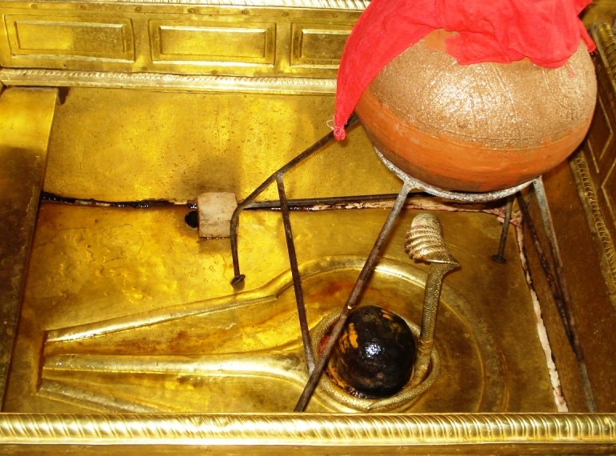

<?xml version="1.0" encoding="UTF-8"?><rss version="2.0"
	xmlns:content="http://purl.org/rss/1.0/modules/content/"
	xmlns:wfw="http://wellformedweb.org/CommentAPI/"
	xmlns:dc="http://purl.org/dc/elements/1.1/"
	xmlns:atom="http://www.w3.org/2005/Atom"
	xmlns:sy="http://purl.org/rss/1.0/modules/syndication/"
	xmlns:slash="http://purl.org/rss/1.0/modules/slash/"
	>

<channel>
	<title>Prahladeshwar &#8211; Varanasi Temples</title>
	<atom:link href="index.html" rel="self" type="application/rss+xml" />
	<link>../../../../../index.html</link>
	<description>Temples of Varanasi as referred to in Kashi Khand</description>
	<lastBuildDate>Thu, 19 Jun 2025 05:16:46 +0000</lastBuildDate>
	<language>en-US</language>
	<sy:updatePeriod>hourly</sy:updatePeriod>
	<sy:updateFrequency>1</sy:updateFrequency>
	<generator>https://wordpress.org/?v=4.6.29</generator>
	<item>
		<title>PRAHLADESHWAR</title>
		<link>../../../../../shiva-temples/prahladeshwar/index.html</link>
		<pubDate>Mon, 10 May 2010 02:48:17 +0000</pubDate>
		<dc:creator><![CDATA[admin]]></dc:creator>
				<category><![CDATA[Other Shiva Temples (L-R)]]></category>
		<category><![CDATA[Prahladeshwar]]></category>
		<category><![CDATA[Shiva Temples]]></category>
		<category><![CDATA[prahlad]]></category>

		<guid isPermaLink="false">../../../../../p=392.html</guid>
		<description><![CDATA[Goddess Parvaty entreated Lord Shiva to describe various Teerths (sacred ponds/lakes) and deities in Kashi. Lord Shiva told her all Lings are enriched with the divine powers of Teerths. (PRAHLADESHWAR) According to Lord Shiva, Prahladeshwar is a Swayambhu Ling in the vicinity of Swarleeneshwar. Devotees worshipping Prahladeshwar will be amply blessed by Lord Shiva.  (Kashi [&#8230;]]]></description>
				<content:encoded><![CDATA[<p>Goddess Parvaty entreated Lord Shiva to describe various Teerths (sacred ponds/lakes) and deities in Kashi. Lord Shiva told her all Lings are enriched with the divine powers of Teerths.</p>
<p style="text-align: left;"></p>
<p style="text-align: center;"><strong>(PRAHLADESHWAR)</strong></p>
<p style="text-align: left;">According to Lord Shiva, Prahladeshwar is a Swayambhu Ling in the vicinity of Swarleeneshwar. Devotees worshipping Prahladeshwar will be amply blessed by Lord Shiva.  (Kashi Khand, Chapter 97)</p>
<p><strong><span style="text-decoration: underline;">LOCATION OF THE TEMPLE</span></strong></p>
<p>Prahladeshwar is located at A-10/80 Prahlad Ghat.  Devotees can approach this place by travelling in cycle rickshaw upto Prahlad Ghat Chouraha and walking on foot.  Alternatively they can take a boat ride upto Prahlad Ghat and climb the steps. The temple is located just above the steps.</p>
<p><strong><span style="text-decoration: underline;">TYPE OF POOJAS</span></strong></p>
<p>The temple is open from 06.00 a.m. to 10.00 a.m. and 06.00 p.m. to 09.00 p.m.  The timings are extremely flexible.</p>
<p>&nbsp;</p>
]]></content:encoded>
			</item>
	</channel>
</rss>
